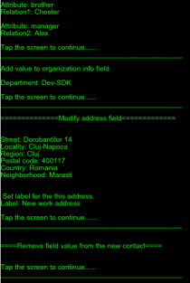

PIMExample
This example application demonstrates how to add, modify and remove a new contact from an address book and how to read contacts from address book.

This example is included in the MoSync SDK installation in the /examples folder. For information on importing the examples into your workspace, see Importing the Examples.
Behaviour
When this application is started a new contact will be added to a contacts list. All available contact fields will be filled with values.
At the next step the first address value from the new created contact will be modified. After that the new contact will be removed from the list. At this point user has two options:
- Print the next contact from the list.
- Close the contact list and start again the whole process(add a new contact, modify address field etc).
In the Code
The project is divided into several files. A brief description of the each file's content is as follows:
- Main.cpp: Application's main entry point.
- AppMoblet.h and AppMoblet.cpp: These files contain code for adding, modifying and removing a contact from a contact list.
- PIMContact.h and PIMContact.cpp: These files contain code for adding and removing values from a contact, printing a contact on the screen and modifying address field.
- Util.h and Util.cpp: These files contain field values for the new contact and methods for handling and printing error codes.
Touch responses
- The application is exited by pressing the Back button.
- When printing or adding values to a contact user can tap on the screen to go at the next field.
- Drag on the screen from left to right to print the next contact.
- Drag on the screen from right to left to close the contacts list.